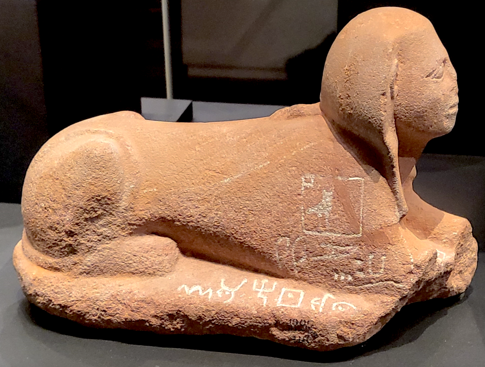

Serabit el-Khadim Inscriptions

- Find Name
- Serabit el-Khadim Inscriptions
- Description
- More than thirty short inscriptions in the Proto-Sinaitic script, the earliest known alphabetic writing, found at the Egyptian turquoise mines and the Temple of Hathor, 'Lady of Turquoise,' at Serabit el-Khadim in southern Sinai. First recorded by Flinders Petrie in his winter campaign of 1905-1906, they were written by Canaanite-speaking miners and workers in the second millennium BC (most scholars place the earliest in the 18th-17th century BC). Alan Gardiner showed in 1916 that the signs adapt Egyptian hieroglyphs acrophonically, each picture standing for the first consonant of the Semitic word for the object depicted.
- Historical Period
- Middle to New Kingdom
- Evidence Class
- Contextual
- Interpretations
- These inscriptions are the key evidence for how the alphabet was invented: Semitic workers in Egypt turned hieroglyphs into consonant letters, the ancestor of the Phoenician alphabet and, through it, the Greek and Latin alphabets in which the New Testament would be written. They are votive texts with personal names and titles, not biblical texts; recent popular claims that some inscriptions name Moses are not accepted by mainstream scholarship and must not be presented as fact.
- Alternative Names
- Proto-Sinaitic Inscriptions
- Related Places
- Biblical Significance
- They illuminate the invention of the alphabet itself, the writing system that made the biblical text possible, created by Semitic speakers in Egypt in the patriarchal era.
- Artifact Date
- c. 1800-1500 BC
- Current Location
- Various; the inscribed sphinx (EA 41748) is in the British Museum
- Date Discovered
- 1905
- Discovery Location
- Serabit el-Khadim, Sinai Peninsula, Egypt
- Timeline Era
- Primeval / Patriarchs
Awaiting Review Not yet checked against scholarly sources. Treat its claims as provisional until this entry is reviewed. About verification
Sources: https://scholarlypublications.universiteitleiden.nl/access/item%3A3295774/download
https://mnamon.sns.it/index.php?page=Scrittura&id=25&lang=en
https://mnamon.sns.it/index.php?page=Scrittura&id=25&lang=en
Last reviewed: not yet reviewed